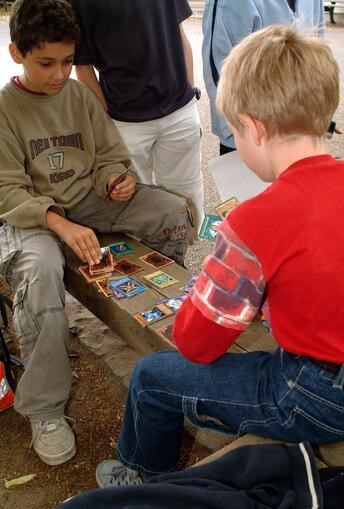
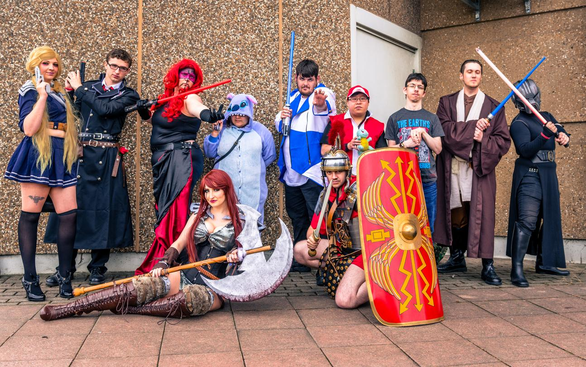

Yu-Gi-Oh! forma parte de la educación

La franquicia Yu-Gi-Oh!, gracias al creador Kazujji Takahashi
realizó un convenio con la ONU para poder permitir que esta
franquicia sea parte de la educación de los jovenes hoy en día
ya que formenta los valores que al mismo tiempo que los hace
independientes, estratégicos y pensantes, sin omitir que este
tipo de juegos genera un ambiente sin tener la adicción del
manejo del celular.
Se anuncia segunda temporada de Kenichi?
La saga de Kenichi aún no se ha rendido, ya que por parte de
de la conferencia de kawai fest en Saitama por Japón se presento
el primer adelanto visual de la adaptación final de dicha saga.
Al hablar con Syun Matsuena nos habla que actualmente esta en
desarrollo toda la entrega final de toda la saga en su segunda y
última temporada de la saga, la cual ocupara más de 300 capitulos.
La moda es ser otaku

La sociedad hoy en día tanto niños, jovenes y adulto se aficionan
con ser otaku, este término se destaca a las personas que tienen
un interes obsesivo al entretenimiento japones desde videojuegos,
series, peliculas, mangas, entre otros medios; actualmente las
personas tratan en cajar en este ámbito sin embargo de manera genérica
olvidando atras el pasado de los otakus, donde se vivia el bullying
a su máximo resplandor hace unos lustros atrás, es por ello que
la sociedad otaku desde lo cimientos dictan la moda al paso del tiempo
destacando hasta la fecha.